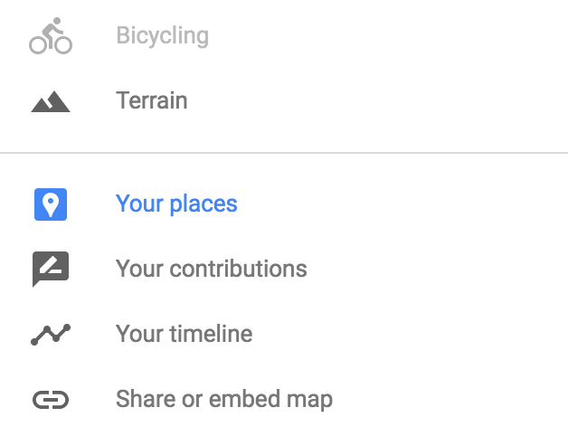
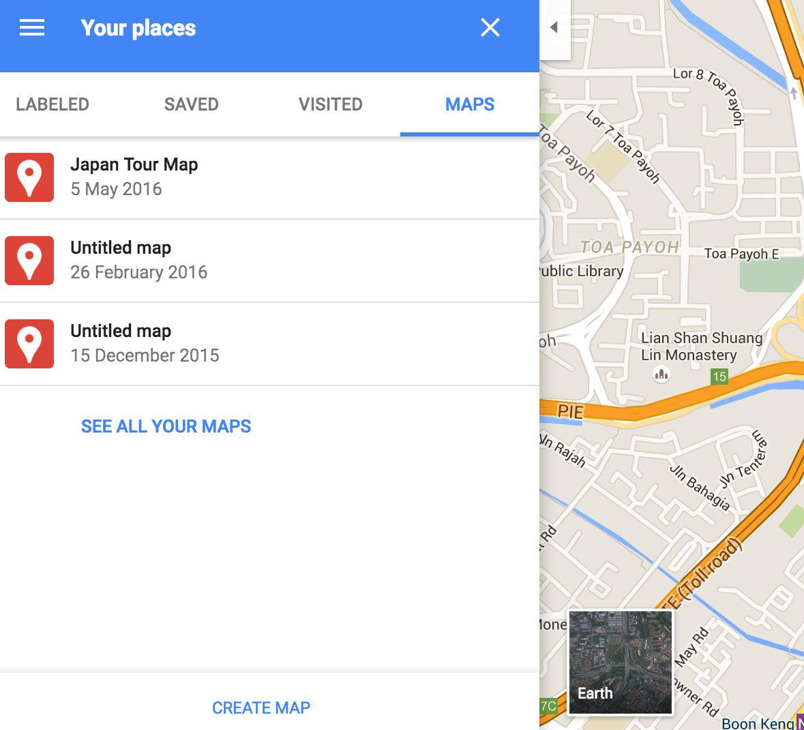

Initial trip itinerary planning on Google Maps
If you cud bring yourself to plan your next trip yourself (Which you should travel packages are boring sometimes), Google is your friend. Google rumored to developing a ultimate travel itinerary planning app at the time of this writing. Until we have such luxury, we have to manage with existing tools and apps.
Google Maps Custom Maps
Probably this might be the most under-utilized tool in planning a trip with Google Maps. Look at the draft custom map I created for my recent trip. (Give it few seconds custom maps take its time to load)
Few featured I used.
- Have custom markers with custom icons, Even custom colors for markers.
- Layers that I can switch on and off.
- Put my own descriptions to refer later.
- Share custom maps with friends.
I kept bookmarking places of interest with google maps stars first. Well Japan is such a awesome country that I ended up with blanket of stars all over the map of country.
So I created a custom map with custom markers and icons.
Visit https://maps.google.com. Go to menu and select your places. Under map section you get a button create map. There you will get a map playground. Play with it you will easily figure it out.

Use Create map button to get to your playground.
